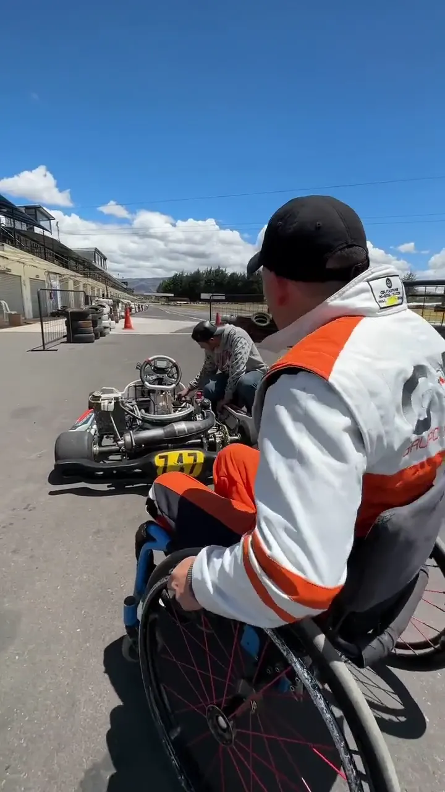
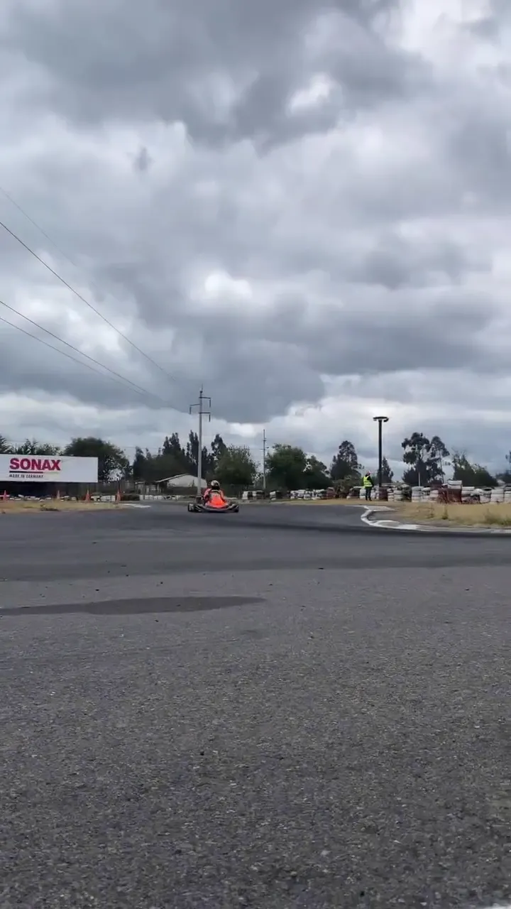
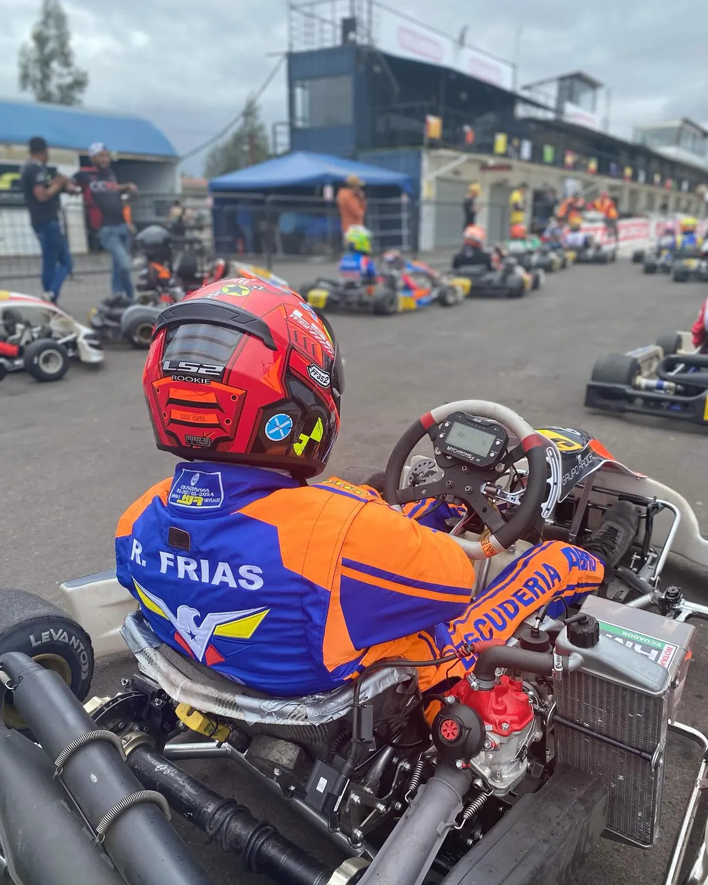
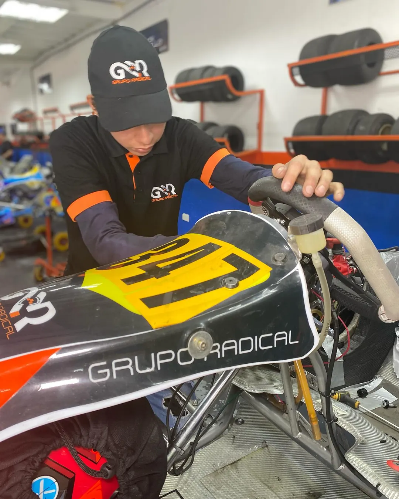
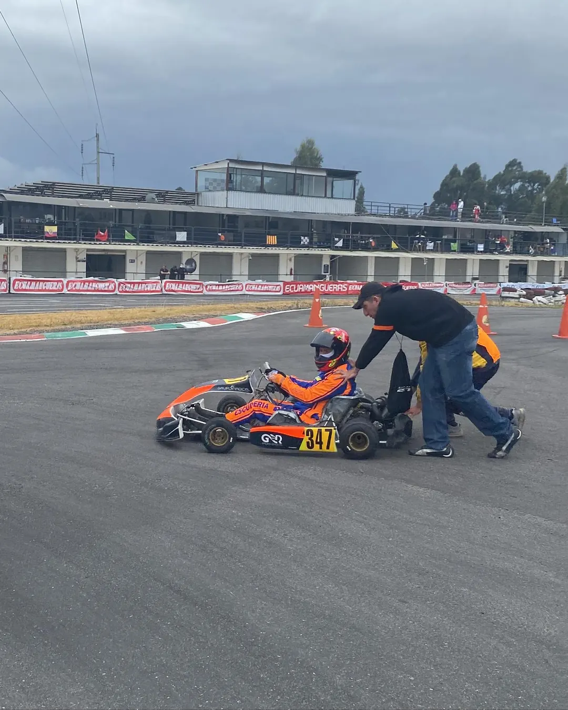
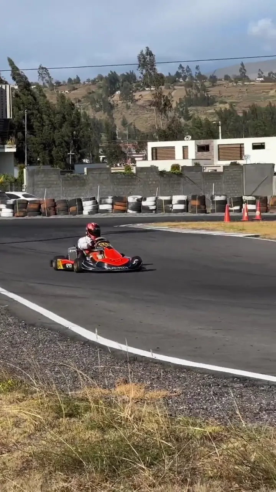
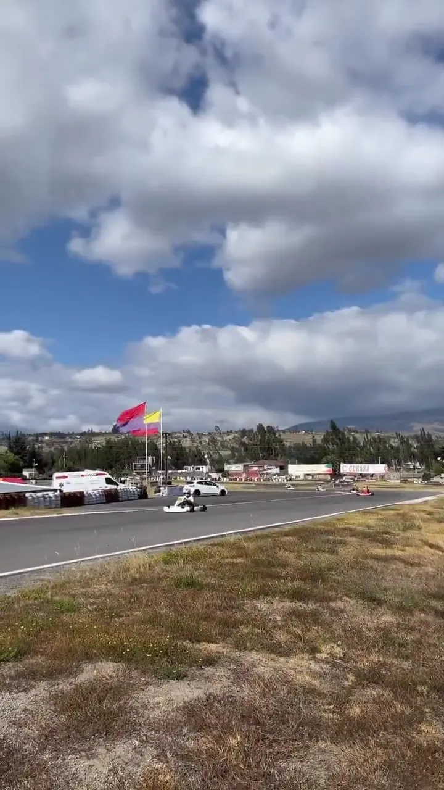
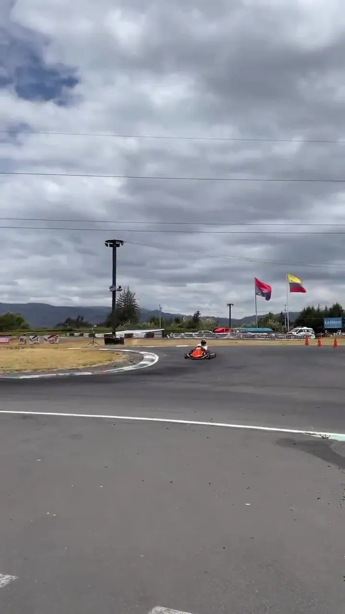
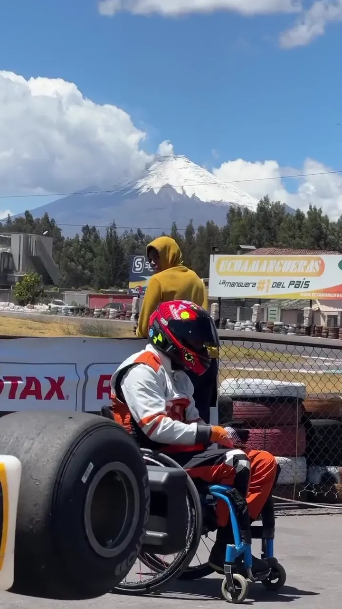

Rubén Frías
Un sueño deportivo no depende de las condiciones. Rubén lo demuestra en cada vuelta.
reproducciones en 11 semanas de campaña
su reel más visto frente a su número de seguidores
válidas completas del Rotax Max Challenge 2023
fuera de las pistas antes de volver a competir
Por qué una marca lo elegiría
Piloto ecuatoriano con discapacidad. Se desplaza en silla de ruedas y compite en karting con un kart adaptado. En 2023 volvió a las pistas después de más de 10 meses y completó las 8 válidas del Rotax Max Challenge Ecuador, en una categoría con campeones mundiales y sudamericanos. Su valor no está en las vistas: está en el mensaje. Cada carrera demuestra que un sueño deportivo es posible sin importar las condiciones. Hoy su proyecto está en pausa y busca una marca aliada para volver.
- 2018Subcampeón en karting adaptado (declarado)
- 2019Podios en el Rotax Max Challenge: 1.º, 2.º y 3.º (declarado)
- 2020Podios en la categoría Open sin cambios (declarado)
- 2021Podios en la ROK Cup Expert Plus (declarado)
- 2023Regreso después de 10 meses: temporada completa del Rotax Max Challenge Ecuador, 8 válidas
- HoyProyecto en pausa, listo para reactivarse con una marca aliada
Lo que construimos juntos
Cobertura en tiempo real, activaciones con marcas, arte gráfico y resúmenes de carrera. Solo piezas creadas en colaboración con Pro Motion.










Datos de Instagram al 21 de octubre de 2026 · @pro_motion.ec
¿Qué marca encaja con Rubén?
Toca un sector para ver una idea de activación basada en lo que su contenido ya demuestra.
Elige un sector.


Caso elaborado por Pro Motion Sport Marketing con datos públicos de Instagram, consultados en noviembre de 2026, de las publicaciones entre el 22 de agosto y el 5 de noviembre de 2023. Los resultados marcados como “declarado” fueron publicados por el deportista. No implica un acuerdo comercial vigente. Los logros marcados como “declarado” fueron entregados por el deportista o su equipo. El puntaje ProMatch mide la preparación comercial observada en el contenido, no la probabilidad de conseguir un auspicio, y no implica un acuerdo comercial vigente.
Diseñemos una activación con Rubén
Recibe una propuesta de activación con entregables, calendario y rango de inversión.